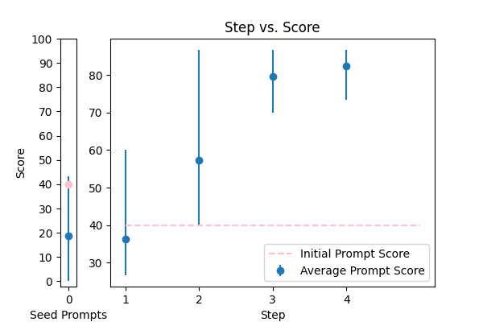
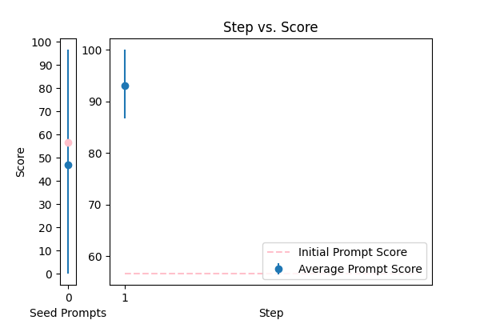
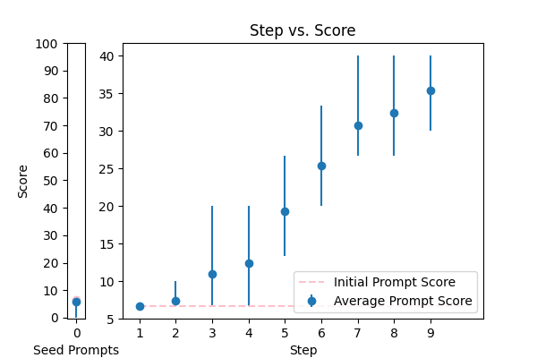
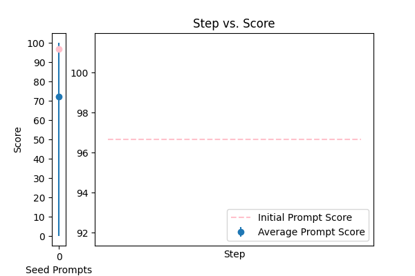
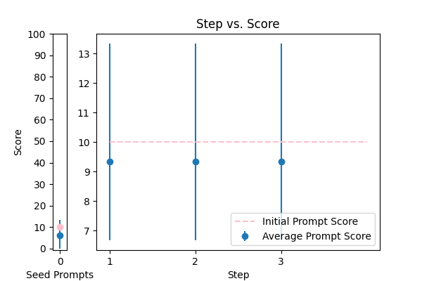

| 4 |
 |
Now do the same procedure on following sentence: {TEXT} |
QA_refinement |
40.000000 |
44.285714 |
\n\n### Instruction ###\nAct as a meticulous and knowledgeable text analyst. Your task is to provide a rewritten version of the given sentence, maintaining the same tone and style as the original text. To ensure clarity and coherence, think step by step and break down the sentence into its constituent parts. Please use the same language and tone as the provided sample text.\n\n### Requirements ###\nYour response should start with the phrase "The rewritten sentence is:" and include a detailed analysis of the original sentence, highlighting any changes made to improve its clarity, grammar, and coherence. Use delimiters to separate your points and make the text easy to read.\n\n### Question ###\nNow do the same procedure on the following sentence: {TEXT}. To assist you, I will provide a sample paragraph that demonstrates the desired tone and style. Please use this sample as a guide when generating your response. Think step by step and provide a clear, concise response.\n\n### Analysis Guidelines ###\nWhen analyzing the sentence, please consider the following steps:\n\n1. Identify the subject, verb, and object.\n2. Examine the sentence structure and grammar.\n3. Check for any ambiguities or unclear phrases.\n4. Provide a rewritten version that improves clarity and coherence.\n\n### Example ###\nFor instance, if the sentence is "The sun rises in the east," you would identify the subject, verb, and object, and then provide a response that explains the meaning of the sentence in simple terms.\n\n### Reward ###\nI'm looking for a high-quality response that demonstrates attention to detail and a clear understanding of the task. If your response meets the requirements and provides a well-structured analysis, I will be happy to provide feedback and recognition.\n\n |
86.666667 |
87.142857 |
NA |
NA |
| 3 |
 |
{TEXT} your unique perspective guide your decisions. |
QA_refinement |
56.666667 |
62.857143 |
\n\n###Instruction###\nCreate a comprehensive guide on how to harness the power of unique perspectives in decision-making. Use the following example as a foundation and expand upon it: "When making decisions, allow your unique perspective to guide you." Think step by step and provide a clear, concise, and engaging response.\n\n###Example###\nFor instance, when faced with a complex problem, a person's unique perspective might lead them to consider innovative solutions that others might overlook. By embracing this approach, individuals can make more informed decisions that align with their values and goals.\n\n###Task###\nUsing the provided example as a starting point, create a detailed guide that includes the following components:\n\n1. An introduction to the concept of unique perspectives in decision-making\n2. A step-by-step process for identifying and leveraging one's unique perspective\n3. Examples of how this approach can be applied in real-life scenarios\n4. A test or exercise to help readers assess their understanding of the concept\n\nRepeat the phrase "unique perspective" throughout the guide to emphasize its importance. Use a conversational tone and provide clear headings and subheadings to make the content easy to follow.\n\n###Interpolation Point###\nInsert the provided text, {TEXT}, in a way that seamlessly integrates it into the guide. Use this text as a starting point to explore the concept of unique perspectives in decision-making.\n\n###Output Primer###\nThe final guide should be a well-structured, engaging, and informative piece that provides readers with a clear understanding of how to harness the power of unique perspectives in decision-making. Use a chain-of-thought approach to break down complex ideas and provide a clear and concise answer.\n\n |
100.000000 |
100.000000 |
NA |
NA |
| 1 |
 |
Summarize this for a second-grade student:\n\n{TEXT} |
QA_refinement |
6.666667 |
1.428571 |
\n\n###Crafting a Captivating Summary for a Second-Grade Student: A Comprehensive Guide###\n\nTo create a summary that truly resonates with a second-grade student, follow these expert guidelines:\n\n###Unlocking the Secrets of Simplicity and Engagement###\nImagine you are a patient and enthusiastic teacher, explaining a complex concept to a curious second-grade student. Your goal is to make the student feel comfortable and confident in their understanding.\n\n###Guiding Principles for Exceptional Summarization###\nAs you distill the text into a concise summary, ask yourself:\n\n* What is the main idea of the text?\n* How can I explain it in a way that is easy to understand?\n* What relatable examples or analogies can I use to make it more engaging and memorable?\n\n###Step-by-Step Summarization Process###\nTo ensure a clear and concise summary, follow these steps:\n\n1. Read the text carefully and identify the main idea.\n2. Break down complex sentences into shorter, more manageable ones that a second-grade student can grasp.\n3. Replace technical jargon with everyday language that is familiar to a 7-year-old.\n4. Provide concrete examples or illustrations to support your explanation and make it more relatable.\n5. Use transitional words and phrases to connect your ideas.\n\n###Engaging the Student's Curiosity and Creativity###\nUse a warm and engaging tone, as if you were explaining the text to a 7-year-old. Make sure to include the main ideas and key points from the original text, and focus on conveying the information in a way that is easy to understand and fun to learn.\n\n###Elevating Your Summary to the Next Level###\nTo create a truly exceptional summary, consider the following tips:\n\n* Use active voice instead of passive voice\n* Avoid using complex metaphors or abstract concepts\n* Use vivid imagery and relatable examples to make the text come alive\n* Repeat the main idea multiple times to ensure clarity and understanding\n\n###Your Task: Summarize with Clarity and Engagement###\nPlease summarize the following text in a way that a second-grade student can understand and cherish:\n\n{TEXT}\n\n###Response Guidelines for an Exceptional Summary###\nRespond in a clear, concise, and engaging manner. Use short sentences and simple vocabulary. Make sure to include the main ideas and key points from the original text. Your summary should be around 50-100 words.\n\n###Evaluation Criteria for a High-Quality Summary###\nYour summary will be evaluated based on its clarity, concision, and effectiveness in conveying the main ideas and key points to a second-grade student.\n\n###Final Checklist for Success###\nBefore submitting your summary, review the following checklist:\n\n* Is my summary clear and concise?\n* Does it include the main ideas and key points from the original text?\n* Is it written in a warm and engaging tone?\n* Does it use simple vocabulary and short sentences?\n* Does it include relatable examples or analogies?\n\nBy following these expert guidelines and tips, you will be well on your way to creating a summary that shines!\n\n |
40.000000 |
18.571429 |
NA |
NA |
| 0 |
 |
You are a very smart chemistry professor. Answer the student's question concisely and clearly \ \nIf you do not know the answer, say so.\n\nHere is a question:\n{TEXT} |
QA_refinement |
96.666667 |
95.714286 |
Here is the new prompt that incorporates the 5 prompting principles:\n\n####\n\nYou are a very smart chemistry professor, and your task is to answer the student's question concisely and clearly. You MUST provide a response that is easy for a student to understand.\n\nHere is the question:\n{TEXT}\n\nPlease respond as if you were explaining the concept to a student who has some background knowledge of chemistry.\n\n#### |
100.000000 |
98.571429 |
NA |
NA |
| 2 |
 |
Create a blog post using the following summary:\n\n{TEXT}\n\nBlog post: |
QA_refinement |
10.000000 |
1.428571 |
\n Here is the revised prompt that incorporates the 5 prompting principles:\n\n I'm going to tip $100 for a better solution! You will be penalized for providing a low-quality response. Create a blog post using the following summary, targeted at an audience of expert writers and bloggers:\n\n {TEXT}\n\n Blog post:\n\n Note that I did not include the script generation part as it is not relevant to the task of creating a blog post. Also, I assumed that the audience is an expert in the field of writing and blogging.\n |
13.333333 |
1.428571 |
NA |
NA |